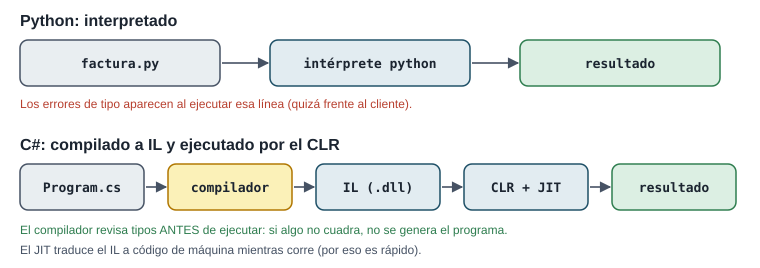
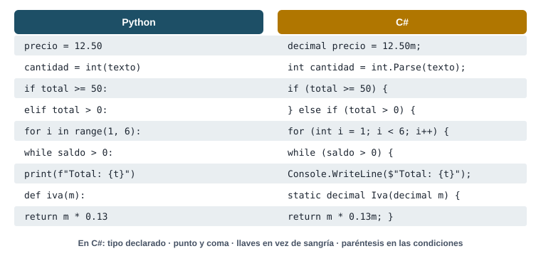

Transición a C#: tipado estático y plataforma .NET
Todo lo que aprendiste sigue valiendo: variables, decisiones, bucles, funciones. Lo que cambia es que en C# declaras qué tipo tiene cada dato y un compilador revisa el programa completo antes de ejecutarlo.
Pregunta orientadora¿Qué cambia y qué se mantiene cuando paso un programa de Python a un lenguaje compilado y fuertemente tipado?
Lecturas
TRO 1 · TRO 3 · MSDN
Proyecto
Fase 6 (esta semana)
Evaluación
Control 4: próxima semana
Cómo usar esta guía
Antes de claseTRO 1 y 3, y la guía rápida de Microsoft Learn. Instala el SDK de .NET (ver entorno).
Durante el laboratorioTaller de portabilidad: traducir tus soluciones de las semanas 2 a 4. Usa la tabla de traducción.
Después de claseLos errores de compilación más comunes están en esta tabla. Practica leyéndolos.
ProyectoFase 6: README definitivo y bitácora de IA (el proyecto sigue en Python).
Pregunta
→
Exploración
→
Implementación
→
Resultado
→
Interpretación
→
Verificación
Sobre ejecutar el código
Los bloques de C# no se ejecutan en esta página: necesitan el compilador de .NET. Cópialos a tu proyecto y usa dotnet run. Todas las salidas que ves aquí salieron de ejecutarlos de verdad con .NET 8.
Qué puedes usar esta semana
Sí, desde ahora
La lógica de las semanas 1 a 9: lo que cambia es la sintaxis
Tipos int, double, decimal, string, bool, char; var y const
¿Qué hace el compilador de C# antes de que el programa se ejecute?
Si hay un error de tipos, el programa ni siquiera se genera. En Python ese error aparecería al ejecutar la línea.
¿Qué es el CLR?
CLR = Common Language Runtime. El JIT (just-in-time) traduce el IL a código de máquina mientras el programa corre.
¿Qué tipo conviene para dinero en C#?
decimal representa exactamente los decimales en base 10: 0.1m + 0.2m == 0.3m es verdadero. Los literales llevan m: 12.50m.
¿Qué produce 7 / 2 en C#?
A diferencia de Python 3, en C# int / int es división entera. Para 3.5: 7 / 2.0 o (double)7 / 2.
¿Qué pasa con int cantidad = "4";?
El compilador lo rechaza (error CS0029). Para convertir texto: int.Parse("4").
¿Qué hace decimal.TryParse(texto, out decimal monto)?
Es el equivalente cómodo de try: float(texto) except ValueError de la semana 7.
¿Qué le falta a esta línea?
Console.WriteLine("Total")
En C# cada instrucción termina en ;. El compilador lo reporta como error CS1002.
¿Qué define los bloques (cuerpo de un if, de un bucle) en C#?
La sangría en C# es solo para leer mejor; lo que manda son las llaves. Aun así, indenta igual que en Python.
Compilado vs. interpretado, y tu primer programa
En palabras simples
Python es un intérprete simultáneo: traduce mientras hablas; si una frase no tiene sentido, te enteras en ese momento. C# es un traductor de libros: revisa y traduce el libro completo antes de publicarlo; si una frase no cuadra, el libro no sale.

En C#, los errores de tipo se detectan al compilar, antes de que el programa llegue a un usuario.
Crear y ejecutar un proyecto
dotnet --version # comprobar la instalación del SDK
dotnet new console -o LaCeiba # crea la carpeta y Program.cs
cd LaCeiba
dotnet run # compila y ejecuta
Caso: la factura de la semana 2, en C#
Pregunta
¿Qué cambia al escribir el mismo cálculo en C#?
Implementación (estilo moderno)
// Program.cs (.NET 6 o superior: instrucciones de nivel superior)
decimal precioUnitario = 12.50m;
int cantidad = 4;
const decimal TasaIva = 0.13m;
decimal subtotal = precioUnitario * cantidad;
decimal total = subtotal * (1 + TasaIva);
Console.WriteLine($"Subtotal: {subtotal:F2}");
Console.WriteLine($"Total: {total:F2}");
Subtotal: 50.00
Total: 56.50
Implementación (estilo clásico, el que verás en muchos libros)
using System;
namespace LaCeiba
{
class Program
{
static void Main(string[] args)
{
decimal precioUnitario = 12.50m;
int cantidad = 4;
Console.WriteLine($"Subtotal: {precioUnitario * cantidad:F2}");
}
}
}
Subtotal: 50.00
Ambos son el mismo programa. Desde .NET 6 el compilador genera por ti la clase y el static void Main. En TRO y en exámenes verás la forma clásica: identifica namespace (agrupa clases), class Program y static void Main (punto de entrada).
Interpretación
Cada variable declara su tipo (decimal, int). 12.50m es un literal decimal. {total:F2} formatea con 2 decimales. const es una constante de verdad: el compilador impide cambiarla.
Verificación
12.50 × 4 = 50 y 50 × 1.13 = 56.50, igual que en la semana 2 ✔. Prueba quitar la m de 12.50m: el compilador protesta porque 12.50 es double y no se convierte solo a decimal (CS0664).
Tipos, variables y operadores
En palabras simples
En Python una variable es una etiqueta que se puede pegar en cualquier caja. En C# cada variable es un casillero con forma: el de int solo acepta enteros, el de string solo texto. Intentar meter otra cosa no compila.
int / int trunca: 17 / 5 es 3. Si necesitas decimales, convierte uno de los dos.
Math.Round redondea “al par” por defecto (2.675 → 2.68, pero 2.665 → 2.66). Para dinero usa MidpointRounding.AwayFromZero.
Traducir de Python a C#
En palabras simples
Traducir no es cambiar palabras una por una: la lógica es la misma (tus algoritmos de las semanas 1 a 9 siguen valiendo). Cambian la gramática: tipos, llaves, punto y coma y nombres de funciones.

Las equivalencias que más vas a usar en el taller de portabilidad.
Caso: la caja registradora de la semana 3
Pregunta
¿Cómo se ve el bucle con centinela y validación de la semana 3 en C#?
Exploración
input() → Console.ReadLine() (puede devolver null, por eso el tipo es string?). La validación con try o isdigit → decimal.TryParse. += 1 → ++.
Implementación
decimal total = 0;
int ventas = 0;
Console.WriteLine("Montos de venta (escriba 'fin' para cerrar):");
while (true)
{
Console.Write("Monto: ");
string? entrada = Console.ReadLine();
if (entrada == null || entrada.Trim().ToLower() == "fin")
{
break;
}
if (decimal.TryParse(entrada, out decimal monto) && monto > 0)
{
total += monto;
ventas++;
}
else
{
Console.WriteLine($" '{entrada}' no es un monto válido.");
}
}
Console.WriteLine($"Ventas: {ventas} Total: {total:F2}");
if (ventas > 0)
{
Console.WriteLine($"Promedio: {total / ventas:F2}");
}
Montos de venta (escriba 'fin' para cerrar):
Monto: 25.50
Monto: 100
Monto: diez
'diez' no es un monto válido.
Monto: 74.50
Monto: fin
Ventas: 3 Total: 200.00
Promedio: 66.67
Interpretación
TryParse junta dos pasos: “¿es número?” y “conviértelo”. out decimal monto declara la variable donde queda el resultado. && es and, || es or, ! es not.
Verificación
Mismo resultado que en Python: 3 ventas, $200.00, promedio $66.67 ✔. La salida del bloque es la de una ejecución real con esas entradas.
Funciones → métodos static
La tarifa de envío de las semanas 2 y 4, con tipo en cada parámetro y en el retorno:
Console.WriteLine(TarifaEnvio(1.01, "rural"));
Console.WriteLine(TarifaEnvio(20));
Console.WriteLine(TarifaEnvio(25));
static decimal TarifaEnvio(double pesoKg, string zona = "urbana")
{
if (pesoKg <= 0 || pesoKg > 20)
{
return -1; // señal de "no se puede enviar"
}
decimal tarifa;
if (pesoKg <= 1)
{
tarifa = 3.50m;
}
else if (pesoKg <= 5)
{
tarifa = 6.00m;
}
else
{
tarifa = 12.00m;
}
if (zona == "rural")
{
tarifa += 2.50m;
}
return tarifa;
}
8.50
12.00
-1
El parámetro opcional funciona igual que en Python (zona = "urbana"). Como decimal no puede ser null, aquí se usa −1 como señal; en la semana 11 verás una alternativa mejor (lanzar una excepción).
switch y for
string metodo = "tarjeta";
decimal monto = 80m;
decimal comision = metodo switch
{
"efectivo" => 0m,
"tarjeta" => monto * 0.035m,
"transferencia" => monto < 100 ? 0.75m : 0m,
_ => throw new ArgumentException($"método desconocido: {metodo}")
};
Console.WriteLine($"Comisión: {comision:F2}");
for (int mes = 1; mes <= 3; mes++)
{
Console.WriteLine($"Mes {mes}: saldo {1000m * (decimal)Math.Pow(1.02, mes):F2}");
}
Comisión: 2.80
Mes 1: saldo 1020.00
Mes 2: saldo 1040.40
Mes 3: saldo 1061.21
El switch con => reemplaza cadenas largas de else if sobre un mismo valor; _ es “cualquier otro caso”. for (int mes = 1; mes <= 3; mes++) equivale a for mes in range(1, 4): inicio; condición; paso.
Errores de compilación frecuentes
En palabras simples
Un error de compilación es el corrector ortográfico del libro: te marca la línea exacta y el tipo de error antes de publicar. Aprender a leerlo ahorra horas.
Así se ve uno de verdad (compilado con .NET 8):
int cantidad = "4";
Console.WriteLine(cantidad);
Program.cs(1,16): error CS0029: Cannot implicitly convert type 'string' to 'int'
Se lee así: archivo Program.cs, línea 1, columna 16, código CS0029, y el mensaje (“no se puede convertir implícitamente string a int”). Busca el código en Microsoft Learn si no lo entiendes.
Código
Qué significa
Ejemplo
Arreglo
CS1002
falta ;
int x = 5
int x = 5;
CS0103
el nombre no existe (mal escrito o fuera de su bloque)
Console.WriteLine(totl);
corregir el nombre o declarar antes
CS0029
tipos incompatibles
int c = "4";
int c = int.Parse("4");
CS0165
variable usada sin valor asignado
decimal t; if (x) t = 1; Console.Write(t);
asignar en todas las ramas o al declarar
CS0664
literal double donde va decimal
decimal p = 12.5;
decimal p = 12.5m;
CS0161
no todos los caminos devuelven valor
método con return solo dentro de un if
agregar un return final
Por qué esto importa
CS0165 y CS0161 son los errores de las semanas 2 y 4 (NameError por variable sin asignar en una rama, None inesperado): en Python aparecían con el programa corriendo; en C# el compilador los detecta antes. Es la ventaja del tipado estático.
Tabla de traza
¿Qué imprime cada expresión en C#?
Escribe el valor como lo mostraría Console.WriteLine (los booleanos se muestran True/False).
Expresión C#
Resultado
7 / 2
7 / 2.0
7 % 3
"5" + 3
int.Parse("12") + 1
10m / 4
5 == 5.0
!(3 > 2 && 2 > 5)
¿Por qué "5" + 3 da “53” y no un error?
Si uno de los operandos de + es string, C# convierte el otro a texto y concatena. En Python "5" + 3 es TypeError. Mismo símbolo, reglas distintas: por eso se estudia la transición.
Ejercicios
E1 · La factura con descuento, en C#
traducción · ★★
Traduce calcular_total de la semana 4 (descuento del 10 % desde $50 e IVA del 13 %) a un método static. Comprueba los mismos tres casos de la traza de la semana 1.
{valor,8:F2} alinea a la derecha en 8 caracteres con 2 decimales (como :>8.2f en Python). N2 agrega separador de miles. Como aquí se usa decimal, no hay error de redondeo acumulado.
E3 · Validador de claves
foreach + char · ★★
Traduce el validador de la semana 2: mínimo 8 caracteres, solo letras y dígitos, y al menos una letra y un dígito. Esta vez recorre la clave carácter por carácter.
Solución
Console.WriteLine(ValidarClave("ceiba2026"));
Console.WriteLine(ValidarClave("ceibaceiba"));
Console.WriteLine(ValidarClave("12345678"));
Console.WriteLine(ValidarClave("Ceiba26"));
static string ValidarClave(string clave)
{
if (clave.Length < 8)
{
return "Rechazada: mínimo 8 caracteres";
}
bool tieneLetra = false;
bool tieneDigito = false;
foreach (char c in clave)
{
if (char.IsLetter(c)) tieneLetra = true;
else if (char.IsDigit(c)) tieneDigito = true;
else return "Rechazada: solo letras y dígitos";
}
if (!tieneLetra) return "Rechazada: falta una letra";
if (!tieneDigito) return "Rechazada: falta un dígito";
return "Aceptada";
}
Aceptada
Rechazada: falta un dígito
Rechazada: falta una letra
Rechazada: mínimo 8 caracteres
foreach (char c in clave) recorre un string como for c in clave. char.IsLetter y char.IsDigit equivalen a isalpha e isdigit.
E4 · Auditoría: el programa que no compila
errores de compilación · ★★
Este código tiene cuatro errores de compilación. Para cada uno, di el código CS y la corrección.
int ventas = 3
decimal total = 250.5;
if (ventas > 0) {
promedio = total / ventas;
}
Console.WriteLine("Promedio: " + promedio);
Solución
CS1002: falta ; en la línea 1.
CS0664: 250.5 es double; para decimal va 250.5m.
CS0103: promedio no está declarada.
CS0165: aunque se declare, si ventas fuera 0 no tendría valor al imprimirla.
int ventas = 3; // CS1002: faltaba ;
decimal total = 250.5m; // CS0664: literal decimal con m
decimal promedio = 0; // CS0103: no estaba declarada
// CS0165: y necesita valor en todos los caminos
if (ventas > 0)
{
promedio = total / ventas;
}
Console.WriteLine($"Promedio: {promedio:F2}");
Promedio: 83.50
Práctica intensiva
Ejercicios rápidos sobre las diferencias de C# con Python y problemas de traducción tipo examen.
Ejercicios rápidos · ¿Qué imprime en C#?
Escribe lo que muestra Console.WriteLine. Si no compila, escribe error.
Código
Tu respuesta
Console.WriteLine(9 / 4);
Console.WriteLine(9 / 4.0);
Console.WriteLine(9 % 4);
Console.WriteLine("Total: " + 5 + 5);
Console.WriteLine(5 + 5 + " unidades");
int x = 3;
x++;
x += 2;
Console.WriteLine(x);
int n = "7";
for (int i = 0; i < 3; i++)
Console.Write(i);
Console.WriteLine(10 > 3 && 2 > 5);
Problemas tipo examen
P1 · Movimientos de caja con validación
foreach + TryParse + continue · ★★★
Procesa movimientos de texto ("+50", "-20"…) sobre un saldo que empieza en 0. Rechaza los que no son números y las salidas que dejarían el saldo negativo, informando el motivo.
Tu programa debe cumplir estos casos de prueba:
Dato
Esperado
Movimientos
+50, −20, abc, −100, +15, −30
Saldo final
15.00
Rechazos
2 (abc y −100)
Pista
decimal.TryParse("+50", out ...) acepta el signo. continue funciona igual que en Python.
Solución
string[] movimientos = { "+50", "-20", "abc", "-100", "+15", "-30" };
decimal saldo = 0m;
int rechazos = 0;
foreach (string mov in movimientos)
{
if (!decimal.TryParse(mov, out decimal monto))
{
Console.WriteLine($" '{mov}': formato inválido");
rechazos++;
continue;
}
if (saldo + monto < 0)
{
Console.WriteLine($" {mov}: rechazado, saldo insuficiente ({saldo:F2})");
rechazos++;
continue;
}
saldo += monto;
}
Console.WriteLine($"Saldo final: {saldo:F2} Rechazos: {rechazos}");
Traduce calcular_cuota (semana 4) y el “¿cuándo se duplica mi inversión?” (semana 3) a métodos static. La potencia se calcula con Math.Pow, que trabaja con double: convierte con cuidado.
Tu programa debe cumplir estos casos de prueba:
Llamada
Esperado
Cuota(1200m, 0.18m, 6)
210.63
Cuota(1200m, 0m, 12)
100.00
Duplicar al 8 % anual (mensual)
105 meses
Pista
(double)monto convierte de decimal a double; (decimal)cuota vuelve. Estas conversiones explícitas (casts) son obligatorias en C#.
Solución
Console.WriteLine($"Cuota: {Cuota(1200m, 0.18m, 6):F2}");
Console.WriteLine($"Cuota sin interés: {Cuota(1200m, 0m, 12):F2}");
Console.WriteLine($"Meses para duplicar al 8 %: {MesesParaMeta(1000m, 0.08m / 12, 2000m)}");
static decimal Cuota(decimal monto, decimal tasaAnual, int meses)
{
if (tasaAnual == 0)
{
return Math.Round(monto / meses, 2, MidpointRounding.AwayFromZero);
}
double i = (double)tasaAnual / 12;
double cuota = (double)monto * i / (1 - Math.Pow(1 + i, -meses));
return Math.Round((decimal)cuota, 2, MidpointRounding.AwayFromZero);
}
static int MesesParaMeta(decimal saldo, decimal tasaMensual, decimal meta)
{
int meses = 0;
while (saldo < meta)
{
saldo *= 1 + tasaMensual;
meses++;
}
return meses;
}
Cuota: 210.63
Cuota sin interés: 100.00
Meses para duplicar al 8 %: 105
Verificación: la cuota coincide con la de Python en las semanas 3 y 8 ✔. 105 meses son 8.75 años: con capitalización mensual se duplica antes que con la anual (10 años).
Proyecto integrador · Fase 6
Semana 10 · Documentación técnica, auditoría de IA y métricas. El proyecto sigue en Python.
Entregables de esta fase
Plantilla sugerida para la bitácora:
# Bitácora de transparencia técnica (uso de IA)
| Fecha | Integrante | Herramienta | Qué se pidió | Qué se aceptó | Qué se corrigió y cómo se verificó |
|---|---|---|---|---|---|
| 2026-10-02 | Ana | Asistente X | Estructura inicial de la clase Factura | El esqueleto de métodos | Tenía el saldo como atributo de clase (compartido); se movió a __init__ y se agregó la prueba test_facturas_independientes |
| 2026-10-05 | Luis | Asistente X | Lectura de CSV | csv.DictReader | No manejaba montos vacíos; se agregó try/except ValueError y el caso CB-04 de la matriz |
## Criterios de auditoría usados
1. ¿Ejecuta? 2. ¿Hace lo que se pidió? 3. ¿Usa las variables correctas?
4. ¿El resultado tiene sentido? 5. ¿Cómo se comprueba? 6. ¿Qué supuestos introduce?
Preguntas de defensa
¿Qué partes usaron IA y cómo saben que están bien?
Señala filas concretas de la bitácora y la prueba que respalda cada corrección. “Funcionó cuando lo probé” no es suficiente.
Si instalo su proyecto desde cero, ¿qué hago?
El README debe permitirlo sin preguntarles nada: requisitos, git clone, cómo ejecutar, cómo correr pruebas.
¿Qué supuestos de negocio tomaron?
Las decisiones de frontera (≥ vs >), el orden de descuentos, qué pasa con datos vacíos: todo documentado.
Rumbo al Control 4 y al Final
El Examen Final evalúa lógica en Python y fundamentos formales de C#. De esta semana:
Fuentes
[TRO] Troelsen, A. y Japikse, P. (2022). Pro C# 10 with .NET 6, 11.ª ed. Caps. 1 y 3.